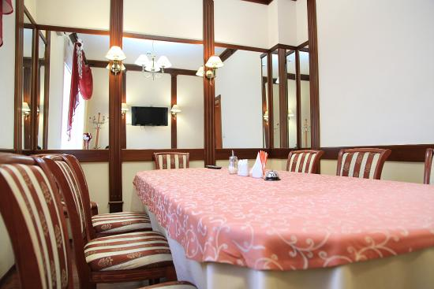
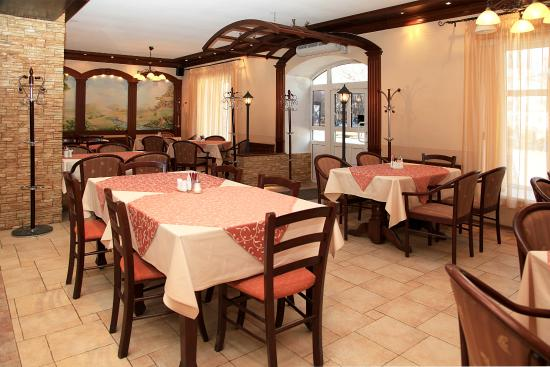
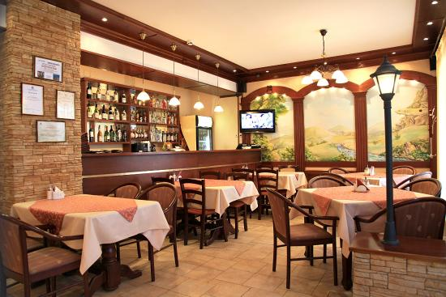

Назад
Обзор зала
Ресторан — «высшая ступенька» развития индустрии гостеприимства, предприятие питания, имеющее ряд своих особенностей:
- 1. Ресторан предоставляет своим гостям широкий ассортимент «сложных» блюд, т.е. прошедших весь технологический цикл: первые и вторые горячие блюда, холодные и горячие закуски, салаты, десерты, хлебобулочные изделия (в идеале, собственного производства); большой выбор напитков — крепкие и слабоалкогольные напитки, коктейли, прохладительные и горячие напитки.
- 2. Обязательно наличие фирменных блюд и блюд на заказ.
- 3. Уровень обслуживания высокий — каждый столик обслуживает отдельный официант, который не только принимает и приносит заказ, но и следит за своевременной уборкой стола, сменой блюд и дает рекомендации по выбору блюда или напитка. Работу официантов контролирует администратор.
- 4. Организация отдыха и развлекательных программ для посетителей. Ресторан — место, куда люди приходят не только поесть, но и отдохнуть, поэтому для него характерна своя музыкальная и шоу-программа, выступление артистов и даже организация театрализованных представлений.
Продолжить список можно детально проработанным дизайном интерьера, наличием нескольких залов, в том числе банкетного, сервировка столов полотняными скатертями и салфетками.
Рестораны могут быть разные и классифицироваться по местонахождению, ассортименту (национальность кухни, специализация — мясные, вегетарианские, рыбные), тематике, форме обслуживания.
Для ресторанов главный критерий — именно сложность приготовления блюда. Это значит, что продукты должны пройти весь процесс от разделки до термической обработки непосредственно на ресторанной кухне. Если же предприятие закупает заранее приготовленные и, к примеру, замороженные блюда, то именуется оно иначе.


